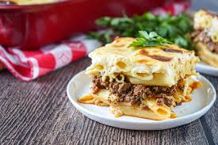

Macarona Bachamel

Description
Macarona Bechamel is a classic Egyptian pasta bake layered with savory meat sauce, creamy béchamel, and penne pasta baked to golden, bubbly perfection. This classic Middle Eastern comfort food is rich, hearty, and always a favorite in my home. Think lasagna vibes, but with a uniquely Egyptian twist!
Personally this migt be my favorite Egyptian food, when i was a kid, when i came back from school and found Macarona Bachamel, it was like the best thing ever. Whenever there is a family gathering, there's going to be macarona bachamel there no doubt
Ingredients
- Penne pasta
- Ground beef
- Onion
- Garlic
- Tomato sauce
- Butter
- Flour
- Milk
- spices
- Optional: Cheese
Steps
1.Prepare the meat
- Sauté a diced onion in oil until softened.
- Add ground beef to the pan, breaking it up as you cook until it is no longer pink.
- Add minced garlic and your chosen spices.
- Mix in tomato paste or sauce and simmer for several minutes to combine the flavors.
2.Make the bachamel sauce
- In a separate pot, melt butter over medium-low heat.
- Whisk in flour and cook for 1 to 2 minutes to create a roux, a paste that serves as the sauce's thickener.
- Gradually pour in milk, whisking constantly to prevent lumps. Chicken broth can also be added for extra flavor.
- Continue to whisk and cook the sauce over medium heat until it has thickened to your desired consistency.
- Season with salt, pepper, and a pinch of nutmeg.
3. Assemble and bake the dish
- Preheat your oven to 375°F (190°C).
- Cook your preferred pasta (penne is traditional) until it is al dente, as it will continue to cook in the oven.
- Mix some of the béchamel sauce into the cooked pasta.
- Spread a thin layer of béchamel on the bottom of a baking dish.
- Add half of the pasta to the dish, followed by an even layer of the meat filling.
- Cover the meat with the remaining pasta.
- Pour the rest of the béchamel sauce over the top, making sure it is completely covered.
- Bake for about 30 to 40 minutes, or until the top is golden brown and bubbly.
- Allow the casserole to rest for 10 to 15 minutes before serving so it sets properly.
Home